library(EcoData)
library(randomForest)
## randomForest 4.7-1.1
## Type rfNews() to see new features/changes/bug fixes.
set.seed(42)
indices = sample.int(nrow(birdabundance), 30)
train = birdabundance[-indices,]
test = birdabundance[indices,]
# ABUND is the response variable12 Exercise
12.1 birdabundance dataset
Warning
Task:
Fit random forest on train data
Predict for test data
Calculate R2
Do the same with a lm and compare the predictive performance of both models
rf = randomForest(ABUND~., data = train)
m = lm(ABUND~., data = train)
pred1 = predict(rf, newdata = test)
pred2 = predict(m, newdata = test)
cor(pred1, test$ABUND)**2
## [1] 0.6596678
cor(pred2, test$ABUND)**2
## [1] 0.1983452RF clearly outperforms the linear regression model!
12.2 titantic dataset
library(EcoData)
library(randomForest)
library(dplyr)
##
## Attaching package: 'dplyr'
## The following object is masked from 'package:randomForest':
##
## combine
## The following objects are masked from 'package:stats':
##
## filter, lag
## The following objects are masked from 'package:base':
##
## intersect, setdiff, setequal, union
set.seed(42)
titanic_sub = titanic %>% select(survived, age, pclass, sex, fare)
titanic_sub = titanic_sub[complete.cases(titanic_sub),]
indices = sample.int(nrow(titanic_sub), 200)
train = titanic_sub[-indices,]
test = titanic_sub[indices,]
Warning
Task:
Fit random forest on train data
Predict for test data
Calculate Accuracy
Do the same with a glm (binomial) and compare the predictive performance of both models
What is the most important variable?
rf = randomForest(as.factor(survived)~., data = train)
m = glm(survived~., data = train, family = binomial)
pred1 = predict(rf, newdata = test)
pred2 = predict(m, newdata = test, type = "response")
# pred2 are probabilities, we have to change them to levels
pred2 = ifelse(pred2 < 0.5, 0, 1)
mean(pred1 == test$survived) # RF
## [1] 0.82
mean(pred2 == test$survived) # glm
## [1] 0.765RF is better than the glm!
varImpPlot(rf)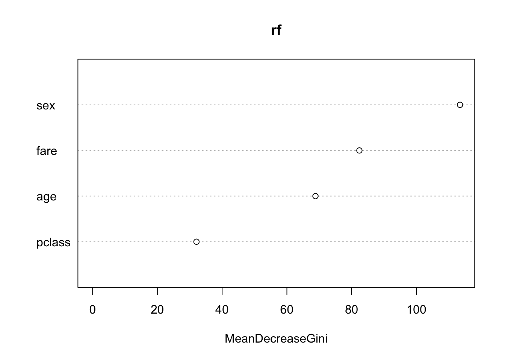
Sex is the most important variable!
12.3 Bias-variance tradeoff
An important concept of statistics and, in particular, ML is the concept of the bias-variance tradeoff - or in other words, finding the right complexity of the model. So how flexible should our model be so that it generalizes well to other/new observations. Many ML algorithms have complexity parameters (e.g. nodesize or mtry in RF) that control their complexity. Have a look at the following youtube video about the bias-variance tradeoff:
Let’s see how we can control the complexity in the Random Forest algorithm:
library(randomForest)
set.seed(123)
data = airquality[complete.cases(airquality),]
rf = randomForest(Ozone~., data = data)
pred = predict(rf, data)
importance(rf)
## IncNodePurity
## Solar.R 17969.59
## Wind 31978.36
## Temp 34176.71
## Month 10753.73
## Day 15436.47
#> IncNodePurity
#> Solar.R 17969.59
#> Wind 31978.36
#> Temp 34176.71
#> Month 10753.73
#> Day 15436.47
cat("RMSE: ", sqrt(mean((data$Ozone - pred)^2)), "\n")
## RMSE: 9.507848
#> RMSE: 9.507848
plot(data$Temp, data$Ozone)
lines(data$Temp[order(data$Temp)], pred[order(data$Temp)], col = "red")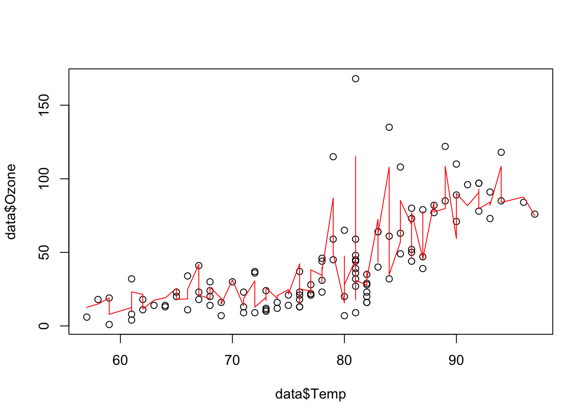
Task
Try different values for the nodesize and mtry and describe how the predictions depend on these parameters. (randomForest(..., nodesize = ..., mtry = ...) (the exercise was taken from the ML course book)
library(randomForest)
set.seed(123)
data = airquality[complete.cases(airquality),]
for(nodesize in c(1, 5, 15, 50, 100)){
for(mtry in c(1, 3, 5)){
rf = randomForest(Ozone~., data = data, mtry = mtry, nodesize = nodesize)
pred = predict(rf, data)
plot(data$Temp, data$Ozone, main = paste0(
"mtry: ", mtry, " nodesize: ", nodesize,
"\nRMSE: ", round(sqrt(mean((data$Ozone - pred)^2)), 2)
)
)
lines(data$Temp[order(data$Temp)], pred[order(data$Temp)], col = "red")
}
}
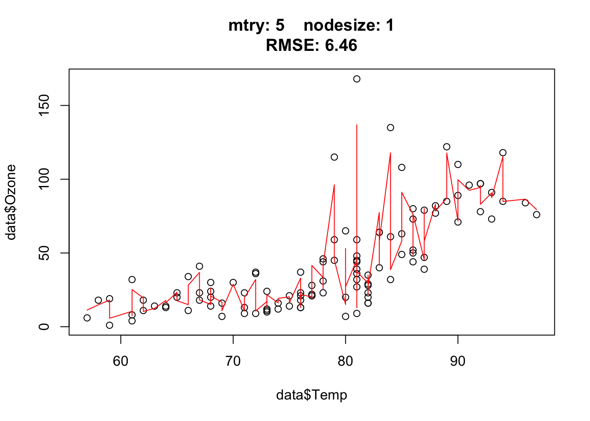

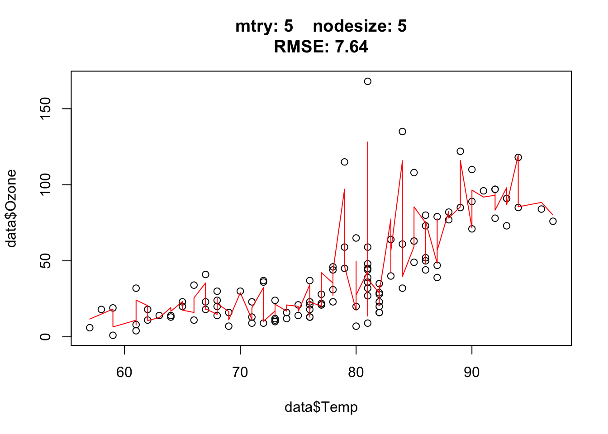
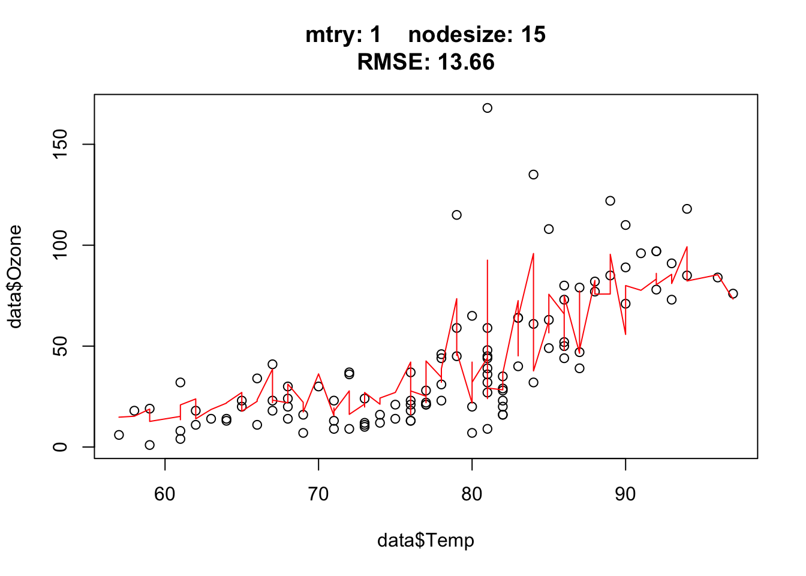
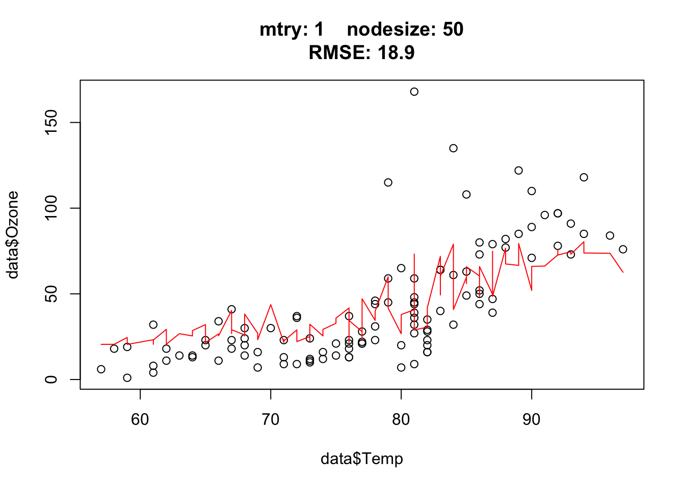

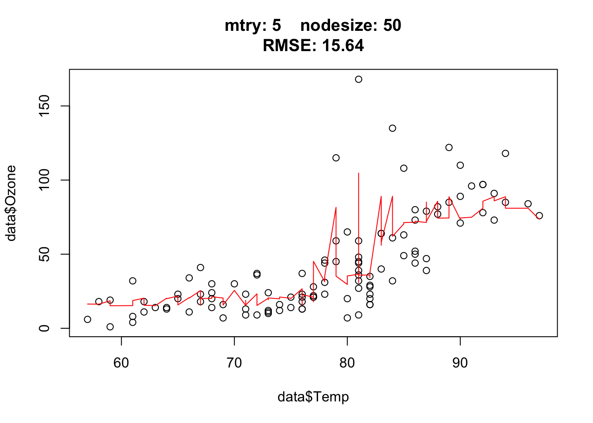
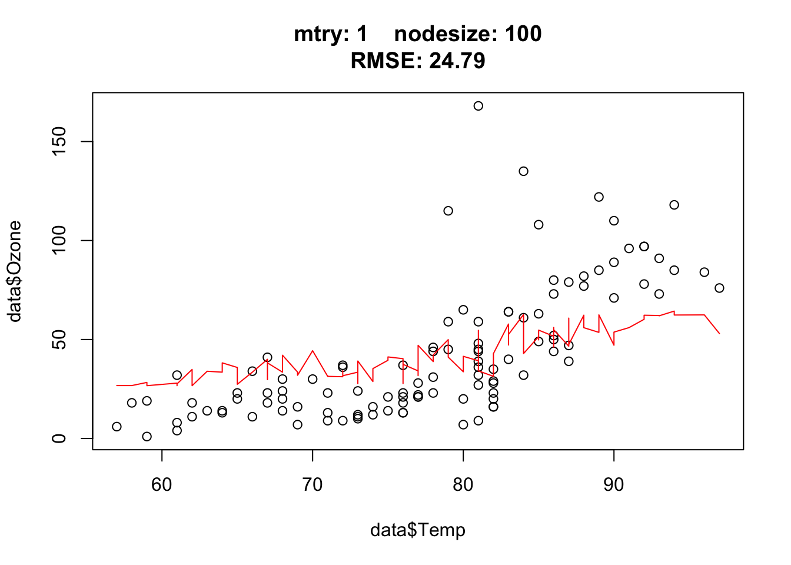


12.4 Deep Neural Networks
Task description: Predict the spatial distribution of the African elephant. In Ecology we call such model a species distribution model.
library(EcoData)
?elephantThe object elephant contains two subdatasets
elephant$occurenceData contains presence / absence data as well as bioclim variables (environmental predictors) for the African elephant
elephant$predictionData data with environmental predictors for spatial predictions
The environmental data consists of 19 environmental variables, called bio1 through bio19, which are public and globally available bioclimatic variables (see https://www.worldclim.org/data/bioclim.html for a description of the variables). For example, bio1 is the mean annual temperature. No understanding of these variables is required for the task, the only difficulty is that many of them are highly correlated because they encode similar information (e.g. there are several temperature variables).
The goal of this exercise is to fit a deep neural network based on the observed presence / absences, and then make new predictions of habitat suitability in space across Africa based on the fitted model. Thus, our workflow consists of two steps:
- building and optimizing the predictive model, and
- using the predictive model to make predictions on new data and visualizing the results.
Here an example of how you could do this
Build predictive model:
# Use subsample of data because too many observations and use the rest of data to validate our model
train_indices = sample.int(nrow(elephant$occurenceData), 500)
df = elephant$occurenceData[train_indices, ]
library(cito)
model = dnn(Presence~bio1,
data = df,
loss = 'binomial',
verbose = FALSE)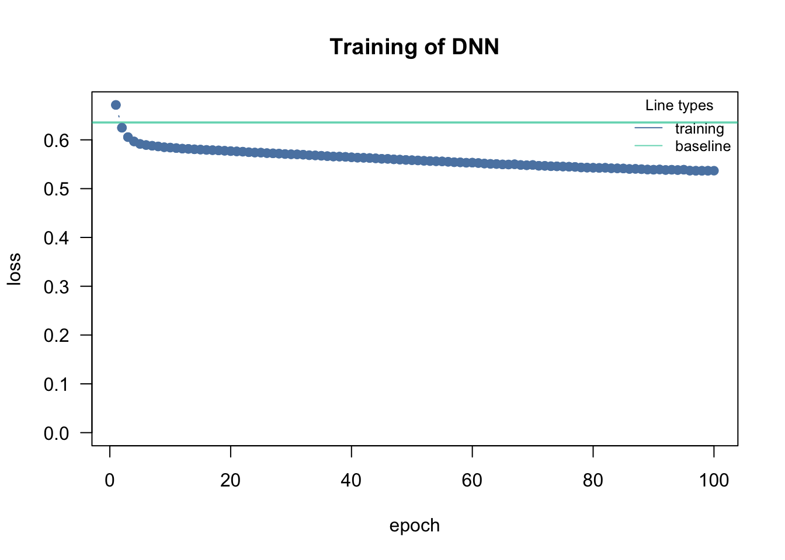
plot(model)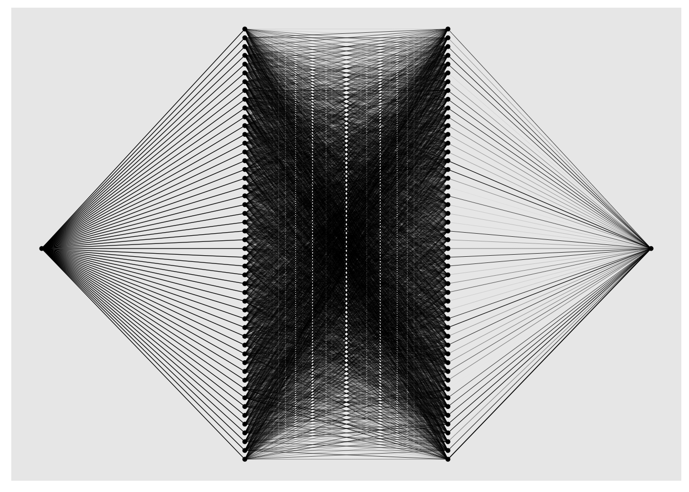
To check the predictive power of the model for the observations we have not used to train the model ([-train_indices,])
library(pROC)
auc(df$Presence[-train_indices],
predict(model, newdata = df[-train_indices,],type = "response"))
## Warning in roc.default(response, predictor, auc = TRUE, ...): Deprecated use a
## matrix as predictor. Unexpected results may be produced, please pass a numeric
## vector.
## Area under the curve: 0.7117The AUC is a common measure of goodness of fit for binary classification.
Tasks
Drop some of the highly correlated variables (don’t use all of them).
Change architecture of the dnn (using the
hidden=c(...)argument)Change the number of epochs and the learning rate (see documentation of
dnn)
Make new predictions
The data for making spatial predictions is in elephant$predictionData. This new dataset is not a data.frame but a raster object, which is a special data class for spatial data. You can plot one of the predictors in the following way.
library(sp)
library(raster)
plot(elephant$predictionData$bio1)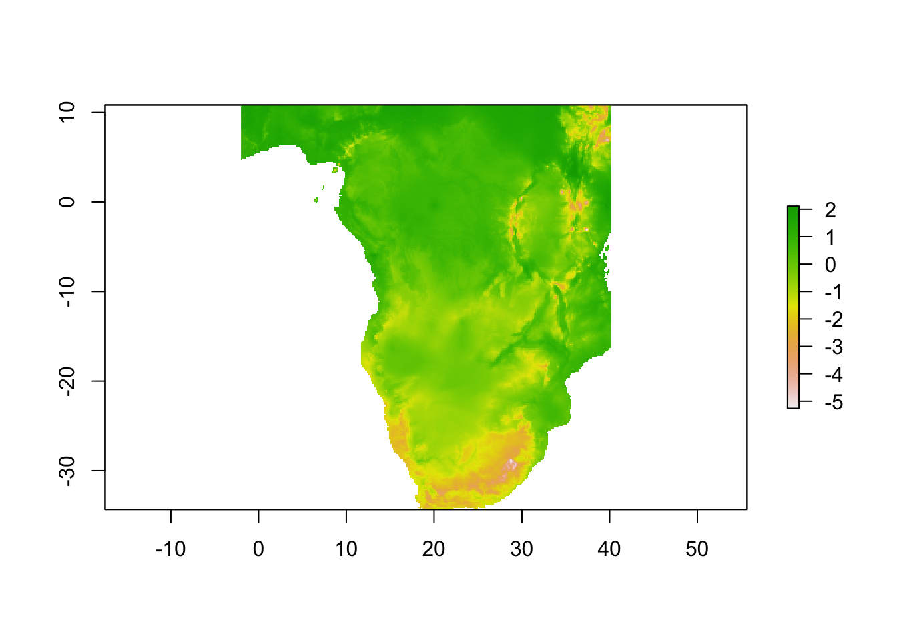
As our new_data object is not a typical data.frame, we are not using the standard predict function for a dnn, which is ?predict.citodnn, but the predict function from the raster object (which internally transforms the new_data into a classical data.frame, pass then the data.frame to our model, and then transforms the output back to a raster object). Therefore, the syntax is slightly different to how we previously used predict().
predictions = predict(elephant$predictionData, model = model, type = "response")
head(as.data.frame(predictions))
## layer
## 1 0.04989933
## 2 0.04631172
## 3 0.04300154
## 4 0.04146853
## 5 0.03866339
## 6 0.03732348The advantage of the raster object is that we can directly use it to create a map (the raster object has coordinates for each observation):
spplot(predictions, colorkey = list(space = "left") )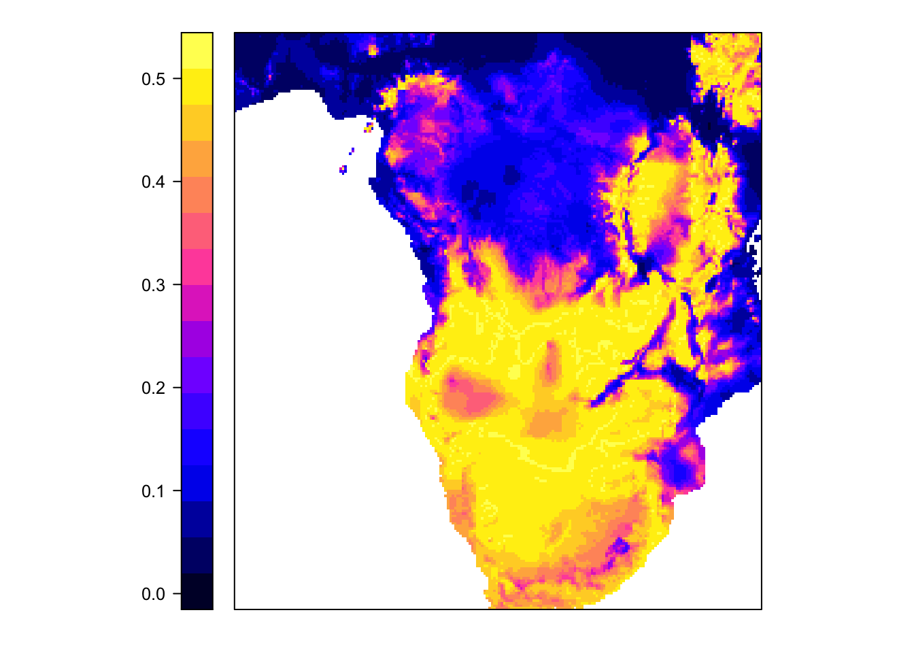
Task: play around with the DNN to improve predictive accuracy. You can check predictive accuracy by looking the AUC of the test data. When improving the predictive power of the model, does the map change?
12.5 ML pipeline
If you want to know more about a typical ML pipeline/workflow, read this chapter from the ML course!